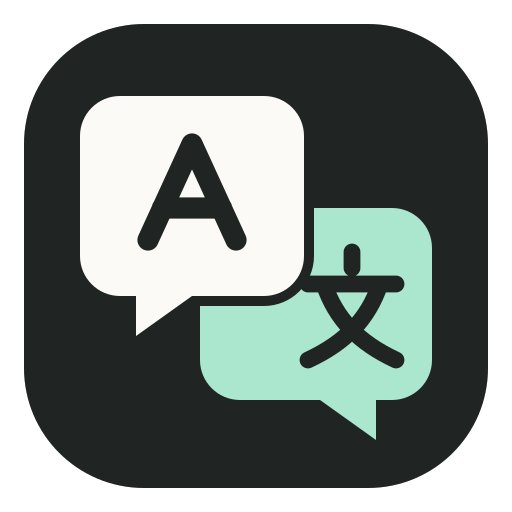

共 0 条记录
用于引导理解、AI 老师和音标。
点击朗读时会把当前英文发送给阿里云百炼，按调用量计费。
留空时复用已保存的百炼北京翻译密钥。
为通用模型指定固定译法，让译文用词一致。
在设备间迁移收藏、学习进度和翻译记录。模型配置和密钥留在本机。
仅保留本次运行中最近 30 条请求。关闭记录会清空列表。密钥会遮盖，分享前请检查原文和学习内容。
请求体已截断。复制时也仅包含可见部分。
正在读取记录…